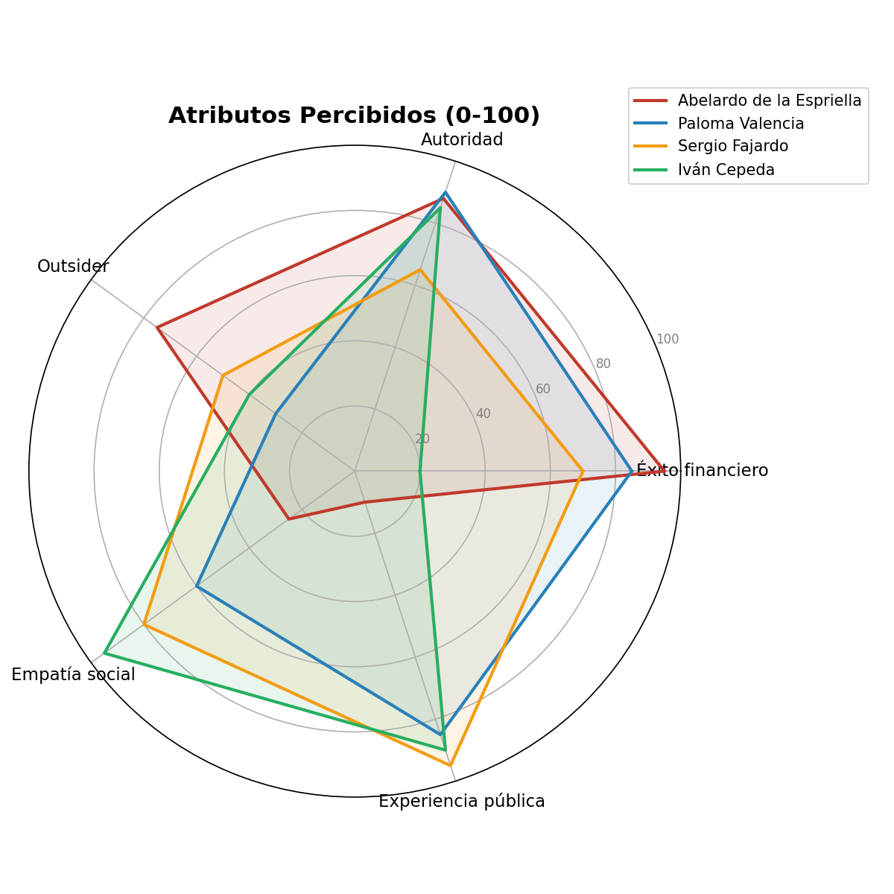
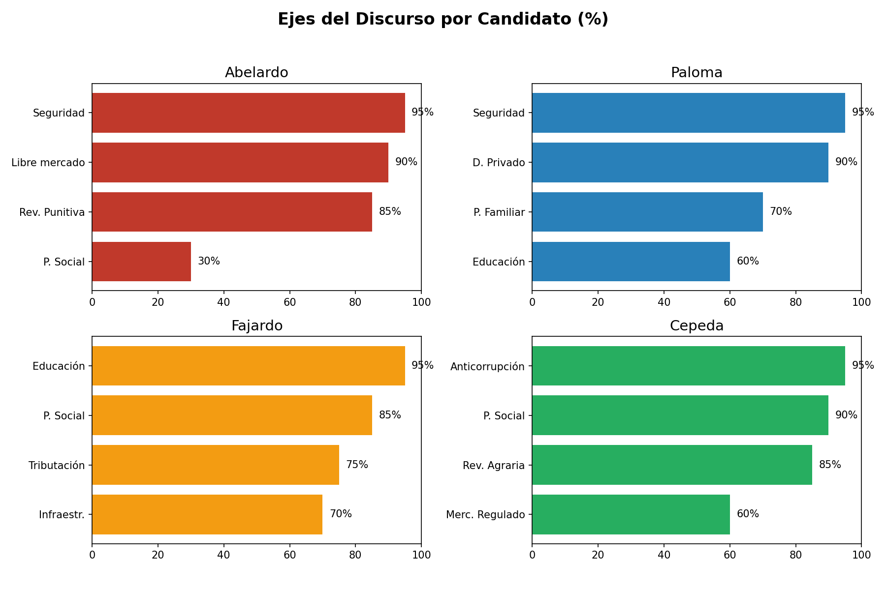

Análisis estratégico de la Presidencia de Colombia. Evaluación cruzada frente al desplome de inversión, déficit fiscal y necesidades ciudadanas (B2C & B2B).

Medición indexada de los atributos clave (0-100).

Porcentajes de la composición del discurso político.
Un perfil orientado a proteger el tejido institucional de servicios esenciales. Fajardo evita saltos burocráticos y recortes radicales de las derechas extremas, blindando al sector con una propuesta social mesurada y priorizando convivencia.
Su necesidad urgente es el alivio fiscal para poder crear empresa. La plataforma de Valencia y su "escalera de formalidad" apunta exactamente a erradicar la asfixia tributaria y a fomentar la reinversión ágil de utilidades.
Un actor enfocado en el flujo de capital y reducción de costos al 0%. Abelardo promete dinamitar el 4x1000 y aplicar un esquema disuasivo policial ("plata y plomo") para la extrema fluidez del capital extranjero sin fricción de Estado.
Este arquetipo vive de la deslocalización digital e IA. El enfoque masivo en infraestructura educativa y TIC (estilo Ruta N) impulsado por Fajardo apunta a construir el ecosistema de talento que estas arquitecturas laborales exigen.
Jugada de mitigación: Restrepo (Ex-Mindefensa/Hacienda) limpia la fachada populista aportando la técnica ortodoxa que claman los mercados y banqueros.
Despolarización: Oviedo desdogmatiza al campo y urbaniza la propuesta con estadísticas frías y big data, suavizando la extrema derecha.
Doble apuesta ideológica: Cierra filas en lo rural y minorías étnicas, asegurando bases sociales pero perdiendo interlocución financiera.
Consistencia total: Dos académicos enfocados 100% en la educación como salida al extractivismo económico. La dupla de técnica pura.
Las finanzas del Estado no soportan una desarticulación populista impositiva (default por "bukelización") ni un hiper-estado subsidiado. Evadiendo ambos extremos insostenibles para la deuda actual, concluimos estratégicamente:
Crecimiento en recaudo formal, centro político conciliador para evitar huelgas que destruyan el PIB mensual, y el pase a la economía del conocimiento que suplante paulatinamente los ingresos petroleros. Riesgo: Alta necesidad de capital político para remontar el estigma "tibio".
Apalancamiento brutal de Mipymes en su trancisión a la formalidad, blindado por el enfoque basado en datos empíricos del ex DANE (Oviedo) para tranquilizar completamente los mercados inversores. Riesgo: Asegura confrontación social en las calles por las reformas.